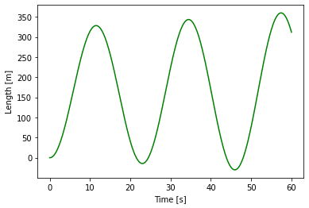
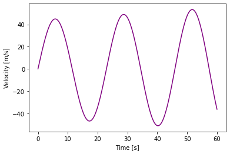
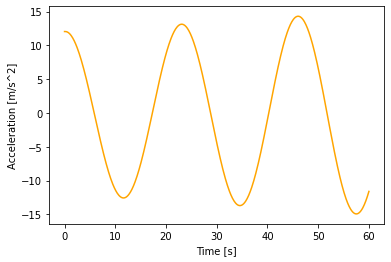

Day 17: In-class Assignment: Modeling with ODEs
Contents
Day 17: In-class Assignment: Modeling with ODEs#
✅ Put your name here.
#✅ Put your group member names here.
#
Goals for Today’s In-Class Assignment#
By the end of this assignment, you should be able to:
Use functions to define derivatives that model the evolution of a physical system.
Use loops to update the state of an evolving system.
Use
solve_ivpto model a physical systemUse
matplotlibto plot the evolution of the system.Use NumPy when necessary to manipulate arrays or perform mathematical operations
Compare the differences between different numerical solutions to ODEs
Assignment instructions#
Today, with your group, you’re going to try to apply what you’ve learned in the pre-class assignment to solve ODEs to model a physical system.
This assignment is due at the end of class and should be uploaded into the appropriate “In-class Assignments” submission folder. Submission instructions can be found at the end of the notebook.
Review from Preclass#
For reference, here are the differential equations of motion we used for the skydiver in the pre-class assignment:
We know that the change in height over some change in time is the velocity of the sky-diver, which we can write as:
where we can think of dh as some small change in the height and dt is some small change in time.
Similarly, a change in velocity over change in time is the acceleration, which we can write as:
Now, if we combine these equations with the initial conditions of the skydiver, we have what is often referred to as an initial value problem.
If we want to solve this system numerically, one way that we can do it is to use a set of “update equations”, that allow us to move the skydiver from one point in time to another. The simplest set of update equations we can use are the following:
and we said that
\begin{eqnarray} \frac{dh}{dt} &=& v \ \ \frac{dv}{dt} &=& \frac{-0.65~A~v~\left|v\right|}{m} + g \end{eqnarray}
Where the first term in our expression for \(\frac{dv}{dt}\) was from air drag and the second term from gravity.
Modeling a bungee jumper#
Building off of what you saw in your pre-class assignment, you’re going to model the motion of a bungee jumper with and without air resistance.
For those of you who might not be familiar with Bungee Jumping, check out the Wikipedia article here. We will draw from our model for the sky-diver to solve this problem; however, we’ll need to add the bungee-cord to our model.
In the bungee jumping model, the cord itself acts as a spring, which provides the restoring force necessary for the bungee jumper to travel back upward once it reaches the bottom of the jump. This will add another term to our expression for \(\frac{dv}{dt}\), specifically:
where
The displacement is defined to be \(l - l_{\mathrm{unstretched}}\), where \(l_{\mathrm{unstretched}}\), is the natural length of the spring when it is neither stretched or compressed
The length, \(l\), will change as the bungee jumper moves. The unstretched length, \(l_{unstretched}\), will be constant, it does not change as the bungee jumper moves
Natural length (neither stretched or compressed) of the bungee cord/spring, is \(l_{\mathrm{unstretched}} = 30.0\) m.
\(k\) is the spring constant. For this problem we’ll say that \(k = 6.0\)
\(m\) is the mass of the thing attached to the spring (in this case, the mass of the bungee jumper)
Important Note: In reality, a bungee cord never pushes the jumper downward, but we’re going to make the assumption that the bungee cord acts like a rigid spring to simplify the problem. So, in our model, when the jumper is at the top of the jump they feel a force downward due to fact that the “spring” is in a compressed state. Any time you compute \(\frac{dv}{dt}\), you’ll want to make sure you include \(\frac{dv_{\mathrm{spring}}}{dt}\)
You’re going to model the length, \(l\), of the bungee cord (not the height of the bungee jumper).#
Solving the ODEs using update equations#
For your first solution, you’re going to model the motion of the bungee jumper using loops and update equations.
✅ As a group, design a model (system of equations) that describe the motion of the bungee jumper both with and without air resistance.
You and your groups members are expected to use your whiteboard to create this model..
Things to think about:
What are your key variables?
What will your equations for \(v\) and \(\frac{dv}{dt}\) look like?
How will you translate these equations into code?
How will you incorporate your equation code into the solution for the skydiver model?
Two things to note
When modeling the length of the bungee cord, gravity acts to extend the cord, so the acceleration due to gravity should be considered a positive value, which is different than the skydiver problem.
A solution for the skydiver model using update equations from the pre-class assignment is included at the end of this notebook if you would like to use it as a reference or as the foundation for your new code.
✎ Put the pseudocode for your model here; Discuss your key variables; Basic equations; Steps to solve this problem
✅ Once you have a plan, translate it into code. Again, you should use loops and update equations to solve the problem. You should make a plot of the bungee cord length and the velocity as a function of time.
The values you should use in your model are:
A projected area, \(A\), of 0.1 m\(^2\)
A mass, \(m\), of 80 kg
Assume that initially, \(l=0\) and that this represents the time when the bungee jumper is at their highest point (i.e., right before they jump)
Assume that initially, your velovity, \(v=0\), because the bungee jumper has not started moving yet.
Finally, use 0.1 seconds as your time step size (\(dt\)), and run your model for a total of 60 seconds.
# Put your code here
When successful, your plots with no air resistance (the undamped oscillator) should look something like this.

### ANSWER ###
import numpy as np
import matplotlib.pyplot as plt
%matplotlib inline
# Define a function that computes the derivatives
def derivatives(l, v, with_drag=True):
# Define any important constants
g = 9.8 # m/s^2
m = 80.0 # kg; average mass of a person in North America
A = 0.1 # m^2
k = 6.0
l_unstretched = 30.0
# Define how length changes
dldt = v
# Define how velocity changes, which is the acceleration
if with_drag:
dvdt = g + (-0.65 * A * v * np.abs(v))/m + (-k * (l-l_unstretched))/m
else:
dvdt = g + (-k * (l-l_unstretched))/m
#return the derivatives
return dldt, dvdt
# Define initial conditions
t = 0.0
l = 0.0
v = 0.0
# Define the final time and the time step
final_time = 60.0
delta_t = 0.1
# Define some lists to store values
time = []
length = []
velocity = []
acceleration = []
# Set the drag flag
drag=False
# Store the initial state of the system in the arrays
time.append(t)
length.append(l)
velocity.append(v)
dldt,dvdt = derivatives(l,v, with_drag=drag)
acceleration.append(dvdt)
# Write a loop for evolving the system
while t < final_time:
# Call our function to compute the values of the derivatives
# We need to make sure we catch the values it returns!
dldt, dvdt = derivatives(l,v,with_drag=drag)
# Use our "update equations" to compute new values
l_new = l + dldt * delta_t
v_new = v + dvdt * delta_t
# Store the new values
length.append(l_new)
velocity.append(v_new)
# Store the acceleration
acceleration.append(dvdt)
# Set the old values to be the new values
l = l_new
v = v_new
# Update the time and store that as well
t += delta_t
time.append(t)
# Make a plot of the result in two different matplotlib figures
# Of course, this could also be done with subplots
fig1 = plt.figure(1)
plt.plot(time,length, color="green")
plt.xlabel("Time [s]")
plt.ylabel("Length [m]")
plt.savefig('undamped_length.png')
fig2 = plt.figure(2)
plt.plot(time,velocity, color="purple")
plt.xlabel("Time [s]")
plt.ylabel("Velocity [m/s]")
plt.savefig('undamped_vel.png')
plt.figure(3)
plt.plot(time,acceleration, color="orange")
plt.xlabel("Time [s]")
plt.ylabel("Acceleration [m/s^2]")
update_eq_length = length
update_eq_velocity = velocity
### ANSWER ###



✅ Question: Do your results make sense? How does adding air resistance change the results? If the bungee jumper jumps from a bridge that is 200 meters above the ground, will they survive the jump?
✎ Put your answers here.
Solving the ODEs using solve_ivp#
Above, you performed numerical update equations to solve for length and velocity. For your second solution, you’re going to model the motion of the bungee jumper using solve_ivp, a flexible python solution for these types of problems (systems modeled with 1st order differential equations).
The basic anatomy for the use of solve_ivp can be seen here:

✅ Once you have a working model, you should make a plot of the bungee cord length and the velocity as a function of time.
Note: You should be able to use what you figured out from the update equation solution to help guide your solve_ivp solution.
As before, try modeling the solution both with an without air resistance and see how the results change.
An solve_ivp solution for skydiver model from the pre-class assignment is included at the end of this notebook if you would like to use it as a reference or as the foundation for your new code.
# Put your pseudocode and code here
### ANSWER ###
import numpy as np
import matplotlib.pyplot as plt
%matplotlib inline
from scipy.integrate import solve_ivp
# Define a function that computes the derivatives
def derivatives(t, curr_vals):
with_drag = False
l,v = curr_vals
# Define any important constants
g = 9.8 # m/s^2
m = 80.0 # kg; average mass of a person in North America
A = 0.1 # m^2
k = 6.0
l_unstretched = 30.0
# Define how length changes
dldt = v
# Define how velocity changes, which is the acceleration
if with_drag:
dvdt = g + (-0.65 * A * v * np.abs(v))/m + (-k * (l-l_unstretched))/m
else:
dvdt = g + (-k * (l-l_unstretched))/m
#return the derivatives
return dldt, dvdt
# Define initial conditions
t = 0.0
l = 0.0
v = 0.0
# Define the final time and the time step
final_time = 60.0
delta_t = 0.1
# Define some lists to store values
time = []
length = []
velocity = []
acceleration = []
# Set the drag flag
drag=False
# Define the time array
time = np.arange(0, final_time + delta_t, delta_t)
# Store the initial values in a list
init = [l, v]
# Solve the odes with solve_ivp
sol = solve_ivp(derivatives, (t,final_time),init,t_eval = time)
length = sol.y[0,:]
velocity = sol.y[1,:]
# Make a plot of the result in two different matplotlib figures
# Of course, this could also be done with subplots
fig1 = plt.figure(1)
plt.plot(time,length, color="green")
plt.xlabel("Time [s]")
plt.ylabel("Length [m]")
fig2 = plt.figure(2)
plt.plot(time,velocity, color="purple")
plt.xlabel("Time [s]")
plt.ylabel("Velocity [m/s]")
solve_ivp_length = length
solve_ivp_velocity = velocity
### ANSWER ###
Comparing your solutions#
Now that you have functional solutions using both the update equations and solve_ivp, you should compare your results from the two different methods.
✅ In the same plot, plot the position as a function of time from both your update equation solution and your solve_ivp solution. Make a separate plot for both velocity solutions as well.
# Put your plotting code here
### ANSWER ###
plt.figure(1)
plt.plot(time,update_eq_length)
plt.plot(time,solve_ivp_length)
plt.figure(2)
plt.plot(time,update_eq_velocity,"g")
plt.plot(time,solve_ivp_velocity,"purple")
✅ Question: Do the results from your two different methods agree? If they don’t, how do they differ? What happens as you change the size of the timesteps? How do the solutions compare when you go to larger time steps? smaller time steps?
✎ Put your answers here.
✅ Question: Which of the two methods for modeling this system do you prefer? Which one felt like more work to get working? For the one that required more work, were there benefits to doing that work or drawbacks? Leave your responses in the cell below.
✎ Put your answers here.
Example solutions to the skydiver problem#
Solution to the skydiver problem using update equations#
The following code provides a solution to the skydiver problem using update equations for the case when air resistance is included.
# Create a function to compute derivaives of velocity and height
def derivs(v,g):
# Define some variables for the air resistance
A = 0.4 # m^2
m = 80.0 # kg
# derivative of height is velocity
dhdt = v
# derivative of velocity is acceleration (gravity in this e.g.)
dvdt = g + (-0.65 * A * v * abs(v))/m
return dhdt, dvdt
# Import modules
import matplotlib.pyplot as plt
%matplotlib inline
# Initialize variables
h = 2000 # initial height; m
v = 0 # initial velocity; m/s
g = -9.81 # gravity; m/s^2
t = 0 # initial time
tmax = 30 # Falling time
dt = 0.1 # timestep
# Initialize lists for storing data
height = []
velocity = []
time = []
acceleration = []
# Append initial values to lists
height.append(h)
velocity.append(v)
time.append(t)
acceleration.append(g)
# Create a time loop that will update the skydiver over time
# Use a while loop that will loop until t > tmax
while t <= tmax:
# Compute derivatives for use in update equations
dhdt, dvdt = derivs(v,g)
# Update Equations
h_new = h + dhdt*dt # new height
v_new = v + dvdt*dt # new velocity
# Append values to height and velocity lists
height.append(h_new)
velocity.append(v_new)
acceleration.append(dvdt)
# Update old height/velocity with new height
h = h_new
v = v_new
# Increase time
t += dt # t = t + dt
# Update time list
time.append(t)
# Plotting height/velocity/acceleration vs time
plt.figure(1)
plt.plot(time, height, color = 'green')
plt.xlabel('Time [seconds]')
plt.ylabel('Height [meters]')
plt.grid()
plt.figure(2)
plt.plot(time, velocity, color = 'purple')
plt.xlabel('Time [seconds]')
plt.ylabel('Veloctiy [meters/second]')
plt.grid()
plt.figure(3)
plt.plot(time, acceleration, color = 'orange')
plt.xlabel('Time [seconds]')
plt.ylabel('Acceleration [meters/second^2]')
plt.grid()
Solution to the skydiver problem using solve_ivp#
The following code provides a solution to the skydiver problem using solve_ivp for the case when air resistance is included.
# Derivative function
def derivs(time,curr_vals):
# Declare parameters
g = -9.81 # m/s^2
A = 0.4 # m^2 ### NEW CODE
m = 80.0 # kg ### NEW CODE
# Unpack the current values of the variables we wish to "update" from the curr_vals list
h, v = curr_vals
# Right-hand side of odes, which are used to compute the derivative
dhdt = v
dvdt = g + (-0.65 * A * v * abs(v))/m
return dhdt, dvdt
# Import commands
import numpy as np
import matplotlib.pyplot as plt
%matplotlib inline
from scipy.integrate import solve_ivp # This one is new to you!
# Declare Variables for initial conditions
h0 = 2000 # meters ### MODIFIED CODE
v0 = 0 # m/s
g = -9.81 # m/s^2
tmax = 30 # seconds ### MODIFIED CODE
dt = 0.1 # seconds ### MODIFIED CODE
# Define the time array
time = np.arange(0, tmax + dt, dt)
# Store the initial values in a list
init = [h0, v0]
# Solve the odes with solve_ivp
sol = solve_ivp(derivs, (0,tmax),init,t_eval = time)
# Unpack the results stored in the solution variable, "sol"
h = sol.y[0,:]
v = sol.y[1,:]
t = sol.t
# Plot the results we unpacked from "sol"
plt.figure(1)
plt.plot(t,h,color = 'green')
plt.xlabel('Time [s]')
plt.ylabel('Height [m]')
plt.grid()
plt.figure(2)
plt.plot(t,v, color = 'purple')
plt.xlabel('Time [s]')
plt.ylabel('Velocity [m/s]')
plt.grid()
Assignment wrapup#
Please fill out the form that appears when you run the code below. You must completely fill this out in order to receive credit for the assignment!
from IPython.display import HTML
HTML(
"""
<iframe
src="https://cmse.msu.edu/cmse201-ic-survey"
width="800px"
height="600px"
frameborder="0"
marginheight="0"
marginwidth="0">
Loading...
</iframe>
"""
)
Congratulations, you’re done!#
Submit this assignment by uploading it to the course Desire2Learn web page. Go to the “In-Class Assignments” folder, find the appropriate submission link, and upload it there.
© Copyright 2018, Michigan State University Board of Trustees